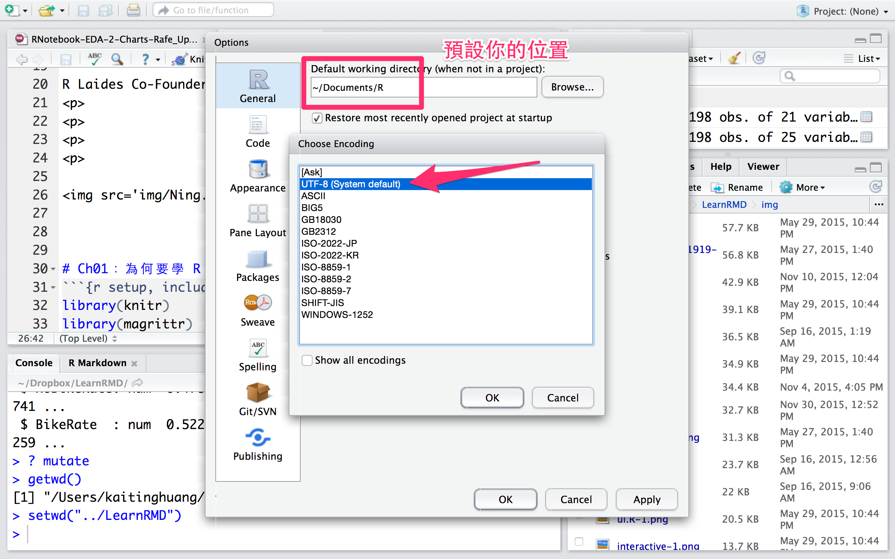
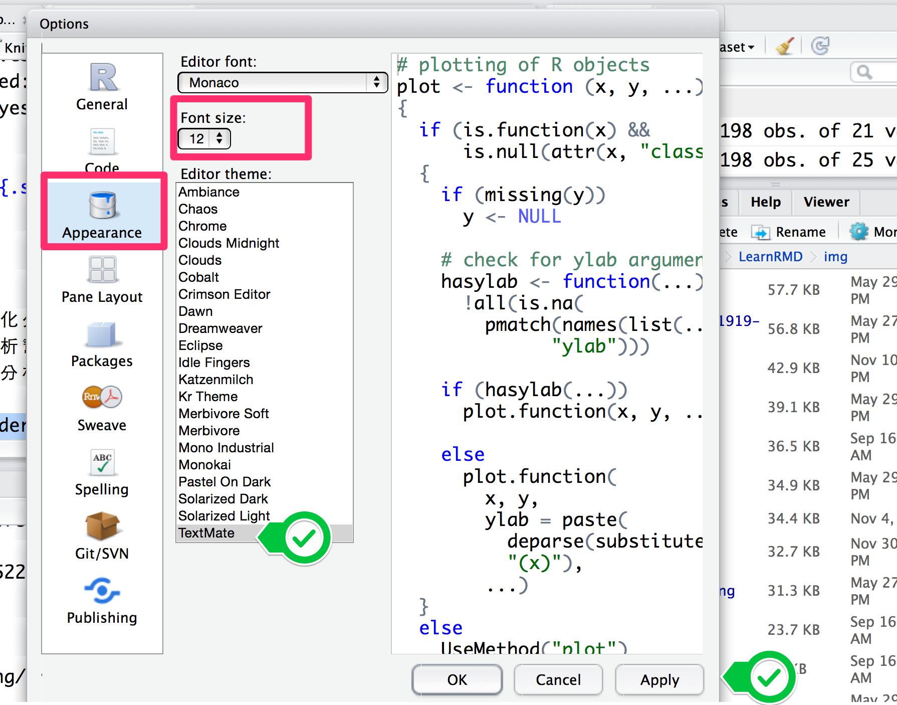

2016年6月28日
工欲善其事，必先利其器
建立 R 的使用環境
環境安裝
- 主程式：R（R-3.2.5 以上版本，最新版本為 R-3.3.0）
- 編輯界面：RStudio IDE（0.98.1103 以上版本）
- 疑難排解指南
記得先安裝 R 再安裝 RStudio 噢！
RStudio 界面說明
熟悉 RStudio 的 命令列 界面
程式輸入、輸出、中斷
- 當符號為
> 表示可以輸入指令
- 輸入
1 + 1 後按下 Enter，檢查螢幕輸出
- 輸入
1 + 後按下 Enter，檢查螢幕輸出
最左下角的開頭變成 + 表示指令尚未輸入完成，應繼續輸入
- 按下 ESC，會中斷執行中的程式 (左下角回復成
> 開頭)
- 快捷鍵成癮者請進：Keyboard Shortcuts
熟悉 RStudio 的 程式碼編輯 界面
停留時間最多的區域
- 開啟 Script：
New File -> R Script -> Untiled1.R
- 欲執行程式碼請大膽按下：
Control + Enter (Windows) or Command + Enter (Mac)
- 在程式碼編輯區中輸入
1 + 1 後
按下 Control + Enter or Command + Enter，檢查命令列區
- 在程式碼編輯區中輸入
1 + 後
按下 Control + Enter or Command + Enter，檢查命令列區
- 在命令列區按下 ESC 中斷程式
預設你的位置與原始編碼

調整字型大小
